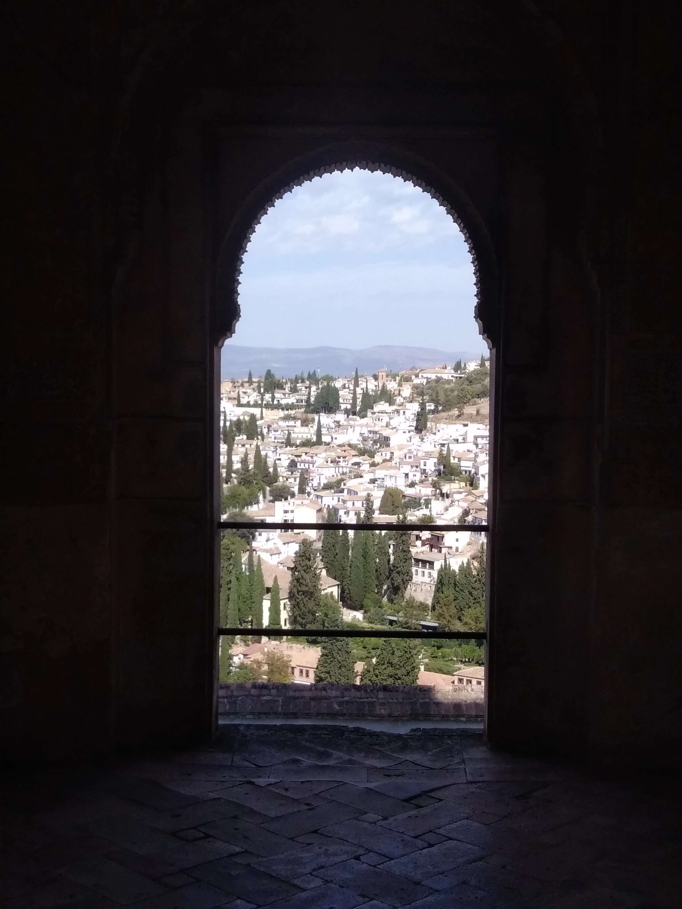

Andalusia represents for me the most fascinating part of Europe and it is also the place where I started my first journey through the country in 2008. This time I decided to start in Valencia to visit a friend and then move down to the south going to Granada and Cordoba to end my journey in Madrid and catch up with the same friend again.
The name Andalusia comes from the Arabic "Al Andalus" and was first attested in Iberia in 715. Despite the various theories that still try to clarify the origin of the name, the name initially seems to refer to the Vandals who occupied Spain from 407 to 429 but then ended up to represent all the different Muslim states that controlled various territories between 711 and 1492, finally shrinked to only Andalusia after the Reconquista
A quick mention to a movie that came up multiple time in my mind during this trip is due. "Un Chien Andalou" of Luis Bunuel (1929) co-written with Salvador Dali. Surrealism and Dali obviously had a huge impact on Spanish culture and together with Picasso and Goya, Dali can be seen as one of the biggest painter in history of Spain. It might sound like a paradox but Surrealism according to his leader Andre Breton, was aimed to create an absolute reality, a "superreal" surreal world. The term was originated from Guillaume Apollinaire in Paris in 1917 and was first used in the program notes of a ballet called Parade with one act of scenario by Jean Cocteau and music from Erik Satie.
**Onda Vaga// Melendi, Como dijo el Rey "Nunca supo ver el, una rosa en las espinas, y para dormir, atracaba las farmacias de la esquina"// Joaquin Sabina, 19 Dias y 500 Noches**